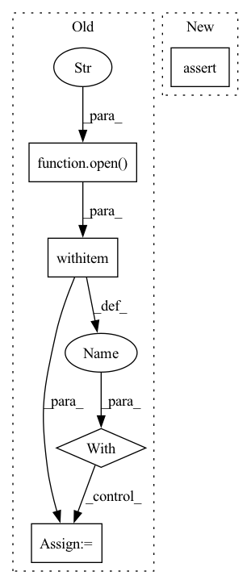

Pattern ID :10990
Before Change
def check_criterion(self) -> None:
Check criterion config validity
// get criterion class lists
with open ("src/losses.py") as file:
node = ast.parse(file.read())
criterion_names = [n.name for n in node.body if isinstance(n, ast.ClassDef)]
// remove parent class(Loss)
criterion_names.remove("Loss")After Change
if ce_params:
assert "num_classes" in ce_params
assert ce_params["num_classes"] > 0
assert isinstance(ce_params["num_classes"], int)
def check_regularizer(self) -> None:
Check regularizer config validity.In pattern: SUPERPATTERN
Frequency: 3
Non-data size: 5
Instances Fragment ID: 37910446
Project Name: j-marple-dev/model_compression
Commit Name: 55cbca4f89999f9502b15ef2d1ab36f04802a625
Time: 2020-07-05
Author: hoonyyhoon@snu.ac.kr
File Name: config/config_validator.py
M Class Name: TrainConfigValidator
N Class Name: TrainConfigValidator
M Method Name: check_criterion(1)
N Method Name: check_criterion(1)
M Parent Class: ConfigValidator
N Parent Class: ConfigValidator
M File Name: config/config_validator.py
N File Name: config/config_validator.py
M Start Line: 115
M End Line: 130
N Start Line: 117
N End Line: 152
Before Change
Args:
data_path (list): path to pickle file.
with open (data_path, "rb") as data_file:
data = pickle.load(data_file)
self.data = [[torch.from_numpy(u).cuda() for u in s] for s in data]
self.seg_len = seg_lenAfter Change
data_dir (list): path to the directory of pickle files.
assert os.path.isdir(data_dir)
self.data = []
self.n_uttrances = n_utterances Fragment ID: 37910449
Project Name: yistlin/dvector
Commit Name: 5e47d5f6e72c99fbd81923da2a611ae87d439032
Time: 2020-03-28
Author: yishen992@gmail.com
File Name: modules/utterances.py
M Class Name: Utterances
N Class Name: Utterances
M Method Name: __init__(4)
N Method Name: __init__(4)
M Parent Class: Dataset
N Parent Class: Dataset
M File Name: modules/utterances.py
N File Name: modules/utterances.py
M Start Line: 18
M End Line: 23
N Start Line: 20
N End Line: 34
Before Change
init_logger(config)
logger = getLogger()
with open ("../saved/ml-100k-dataset.pth", "rb") as f: // You can use your filtered data path here.
dataset = pickle.load(f)
train_data, valid_data, test_data = load_split_dataloaders("../saved/ml-100k-for-BPR-dataloader.pth")
// You can use your split data path here.After Change
model_file="../saved/BPR-Aug-20-2021_03-32-13.pth",
dataloader_file="../saved/ml-100k-for-BPR-dataloader.pth",
)
assert dataset is None
// Filtered dataset and split dataloaders are loaded from file.
config, model, dataset, train_data, valid_data, test_data = load_data_and_model( Fragment ID: 37910452
Project Name: rucaibox/recbole
Commit Name: e3832fa4efcb70ac46051f51bbbc3145454990e6
Time: 2021-08-22
Author: 297086016@qq.com
File Name: run_example/save_and_load_example.py
M Class Name: AnonimousClass
N Class Name: AnonimousClass
M Method Name: load_example(0)
N Method Name: load_example(0)
M Parent Class:
N Parent Class:
M File Name: run_example/save_and_load_example.py
N File Name: run_example/save_and_load_example.py
M Start Line: 54
M End Line: 75
N Start Line: 29
N End Line: 51